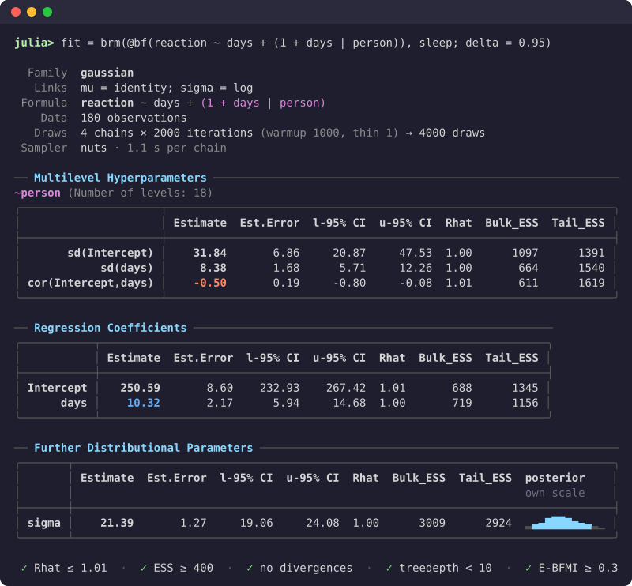

PracticalBayesianRegression.jl
Bayesian regression models in Julia, written the way R's brms writes them. The package covers the model classes brms does: generalised linear and multilevel models, distributional, ordinal and categorical models, censored and truncated responses, non-linear models, multivariate models, mixtures, smooths, Gaussian processes, autocorrelation and spatial terms, measurement error and missing-data imputation. It uses brms's formula syntax and default priors, and names the parameters in its output as brms does.
using PracticalBayesianRegression
fit = brm(@bf(count ~ treatment + (1 | site)), data; family = poisson())
fit # summary table
pp_check(fit) # posterior predictive check (load a plotting package first)
loo(fit) # leave-one-out cross-validation
posterior_predict(fit; newdata = new_sites, allow_new_levels = true)A fitted model prints brms's summary, with convergence diagnostics:

How it differs from brms and TuringGLM.jl
- No probabilistic programming language in between. brms writes Stan code and TuringGLM.jl writes a Turing model. This package builds each model's log density directly from the formula, with a closed-form gradient, and samples it with its own implementation of NUTS (the algorithm Stan uses). Each evaluation of the log density does as little work as possible.
- Models compile to standalone programs. The log density, its gradient and the sampler compile with
juliac --trim.build_binaryturns a model into an executable that refits it to new data without Julia (for a subset of models; see Build a model binary). - Turing and PracticalBayes code on request.
turing_codeandpb_codewrite any fitted model out as an editable@model, for changing the model by hand. The generated model is not guaranteed to be as fast as the package's own.
Installation
using Pkg
Pkg.add("PracticalBayesianRegression")Chains run on separate threads; start Julia with julia -t 4 (or more) to use them. Plotting needs one of CairoMakie, PlotlyLight or UnicodePlots, and conversion to ArviZ's InferenceData needs InferenceObjects.
Where to go next
- New to the package: start with the tutorials.
- Coming from R: Coming from brms lists what is written differently.
- A specific task: the how-to guides cover priors, families, smooths, missing data, predictions, model comparison and more.
- Every function: the reference section.
- Why the package works the way it does: the explanation section.